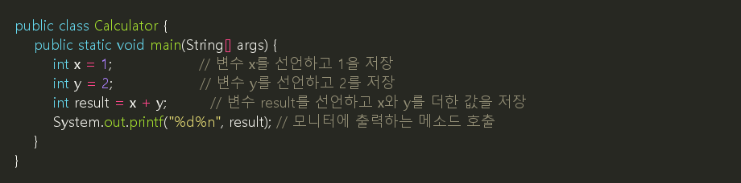
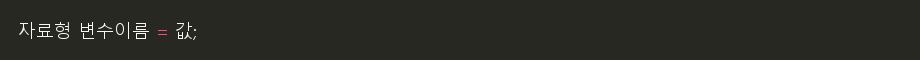
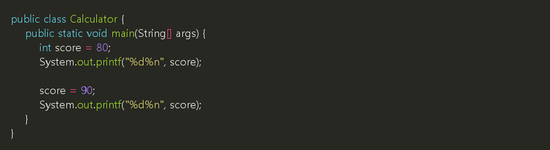
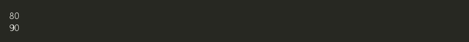
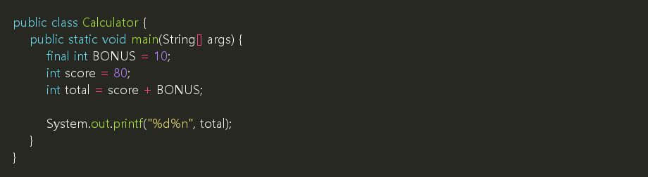
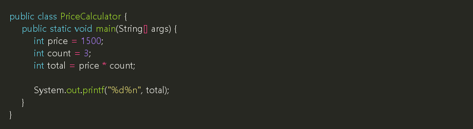
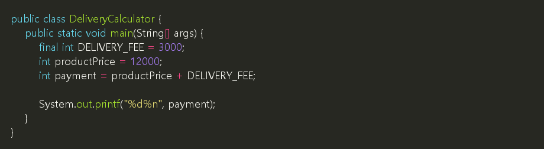
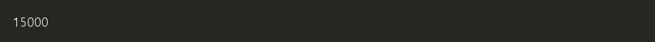

프로그램에서는 값을 저장해 두고 다시 사용할 일이 많습니다. Java에서는 값을 저장하는 이름을 만들 때 변수와 상수를 사용합니다.
- 변수: 값을 저장하고, 필요하면 나중에 바꿀 수 있습니다.
- 상수: 값을 한 번 정하면 바꾸지 않는 값입니다.
1. 시작 예제: Calculator.java
파일 이름은 Calculator.java로 저장합니다.

실행 결과:
2. 코드 살펴보기
| 코드 | 설명 |
|---|---|
int x = 1; |
정수 값을 저장할 수 있는 변수 x를 만들고 1을 저장합니다. |
int y = 2; |
정수 값을 저장할 수 있는 변수 y를 만들고 2를 저장합니다. |
int result = x + y; |
x와 y를 더한 값을 result에 저장합니다. |
System.out.printf("%d%n", result); |
result에 저장된 정수 값을 출력하고 줄을 바꿉니다. |
💡 참고: int는 정수를 저장하는 자료형입니다. 1, 2, 100처럼 소수점이 없는 숫자를 저장할 때 사용합니다.
⚠️ 보안 참고: 이 교안에서는 출력할 때 println() 대신 printf()를 사용합니다. 포맷 문자열은 "%d%n"처럼 코드에 고정하고, 출력할 값은 뒤쪽 인자로 전달합니다.
3. 변수의 기본 모양
변수는 보통 다음 순서로 작성합니다.

예:
| 부분 | 의미 |
|---|---|
int |
저장할 값의 종류입니다. 여기서는 정수입니다. |
score |
값을 저장할 변수 이름입니다. |
80 |
변수에 저장할 값입니다. |
4. 변수 값 바꾸기
변수는 값을 다시 저장할 수 있습니다.

실행 결과:

처음에는 score에 80이 저장됩니다. 그다음 score = 90;이 실행되면 score의 값이 90으로 바뀝니다.
5. 상수 사용하기
상수는 값을 바꾸지 않기로 정한 이름입니다. Java에서는 final을 붙여 상수를 만듭니다.

실행 결과:
| 코드 | 설명 |
|---|---|
final int BONUS = 10; |
BONUS라는 상수를 만들고 10을 저장합니다. |
int total = score + BONUS; |
변수 score와 상수 BONUS를 더해 total에 저장합니다. |
⚠️ 주의: final로 만든 상수는 나중에 값을 다시 바꿀 수 없습니다.
💡 참고: 언어마다 상수를 만드는 방법이 조금씩 다릅니다.
| 언어 | 상수 표현 예 | 특징 |
|---|---|---|
| Java | final int BONUS = 10; |
final을 붙이면 값을 다시 바꿀 수 없습니다. |
| JavaScript | const bonus = 10; |
const로 선언한 이름에는 값을 다시 대입할 수 없습니다. |
| C | const int BONUS = 10; |
const를 붙여 값을 바꾸지 않겠다고 표시합니다. |
| C++ | const int BONUS = 10; |
const를 사용하거나, 상황에 따라 constexpr를 사용할 수 있습니다. |
| Python | BONUS = 10 |
문법적으로 상수를 강제하지 않습니다. 대문자 이름으로 상수처럼 사용한다는 약속을 둡니다. |
| Kotlin | const val BONUS = 10 |
컴파일 시점에 정해지는 상수는 const val을 사용합니다. |
6. 변수와 상수 비교
| 구분 | 변수 | 상수 |
|---|---|---|
| 값 변경 | 가능 | 불가능 |
| Java 표현 | int score = 80; |
final int BONUS = 10; |
| 이름 예 | score, age, result |
BONUS, MAX_COUNT, PI |
| 사용 상황 | 계산 중 값이 바뀔 수 있을 때 | 프로그램에서 계속 같은 값으로 사용할 때 |
7. 다른 예제 1: 물건 가격 계산

실행 결과:
확인할 것:
price에는 물건 하나의 가격이 저장됩니다.count에는 개수가 저장됩니다.total에는 가격과 개수를 곱한 값이 저장됩니다.
8. 다른 예제 2: 고정 배송비 더하기

실행 결과:

DELIVERY_FEE는 배송비입니다. 배송비처럼 프로그램 안에서 고정해서 사용할 값은 상수로 두면 의미가 분명해집니다.
9. 연습
다음 조건에 맞는 프로그램을 작성해 봅니다.
- 파일 이름은
BookCalculator.java로 저장합니다. - 책 한 권의 가격은
12000원입니다. - 책의 개수는
2권입니다. - 고정 할인 금액은
1000원입니다. - 최종 금액을 출력합니다.
예상 실행 결과:
✅ 확인할 것:
- 책 가격과 책 개수는 변수로 작성합니다.
- 할인 금액은
final을 사용한 상수로 작성합니다. - 계산 결과를 저장할 변수를 하나 더 만듭니다.
- teaching/materials/java/3-2_variables_constants.md최종 수정일: 2026-09-17 02:29